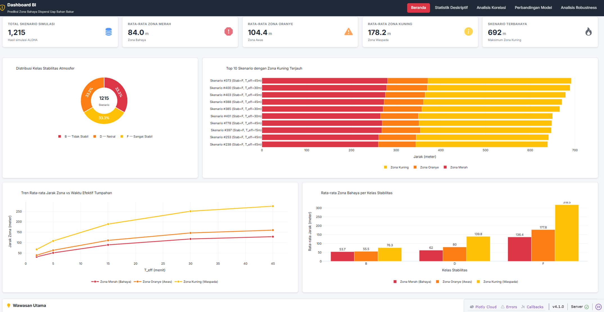
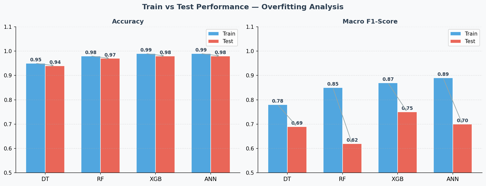
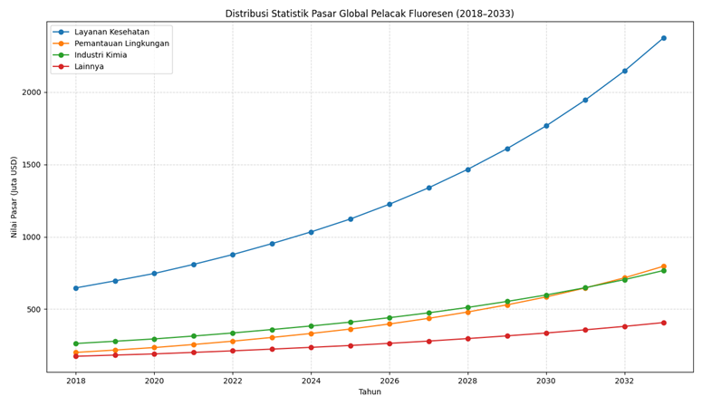
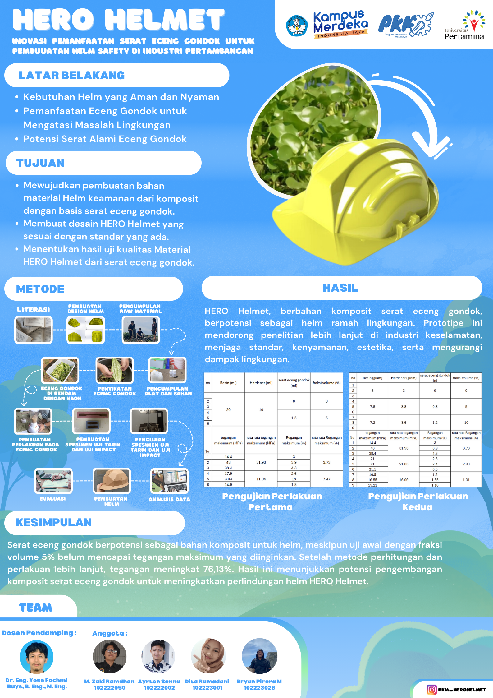
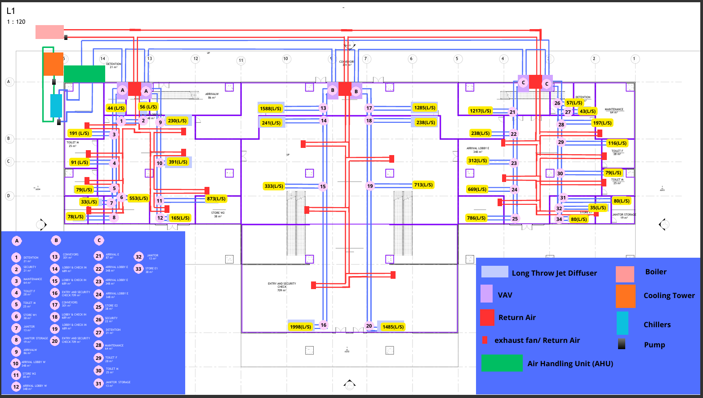
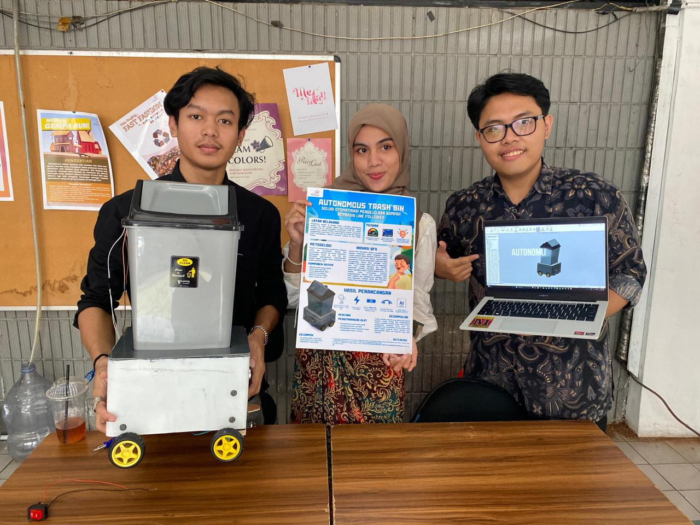

AI Engineering
Certificate of Excellence
Ruangguru Engineering Academy+ AI Engineering Bootcamp, awarded with grade A.
Mechanical Engineering undergraduate at Universitas Pertamina combining classical engineering analysis with data analytics, machine learning, and risk-based decision support for industrial safety and energy transition problems.

A mechanical engineering profile sharpened around safety, reliability, risk analysis, and practical data-driven decision support.
I am a Mechanical Engineering undergraduate at Universitas Pertamina focused on process safety, quantitative risk assessment, reliability engineering, and data-driven engineering applications. My work connects engineering fundamentals with statistical modeling, machine learning, and decision-support dashboards.
My current research develops ML-based surrogate models for n-Hexane tank overfill hazard zone prediction using ALOHA simulation outputs. I also have experience in BOP FMEA/RPN risk assessment, published Human Reliability Assessment research, energy transition modeling, and engineering calculation templates.
Bachelor of Mechanical Engineering
Boarding School Science Program
Award: Outstanding Student Distinction, 2022
Applied engineering judgment through maintenance, teaching, and laboratory environments.
Instructed students on fluid flow characteristics, head loss in piping systems, pump performance testing, and safety protocols during hydraulic experiments.
Guided tensile, torsion, and impact testing using Universal Testing Machines to analyze material properties and destructive testing procedures.
Mentored 30+ students per semester in physics experiments and evaluated weekly technical reports with a focus on data accuracy.
Ranked around the strongest evidence for process safety, QRA, reliability, and data-driven engineering capabilities.
Flagship work aligned with Process Safety, HSE/HSSE, Risk Engineering, Reliability, and Engineering Data Analytics.

Undergraduate Thesis | Process Safety, QRA & ML Surrogate Modeling
Developed rapid hazard-zone prediction workflows for n-Hexane tank overfill scenarios using ALOHA ground truth, ML surrogate models, and a dashboard for decision support.
View case study
First Author | Manuscript under pre-review
Analyzed Indonesia's energy transition using ARIMA forecasting, multiple regression, Monte Carlo simulation, and sensitivity analysis to quantify policy target feasibility.
View case study
Project Leader | Published in Motivtech Journal
Compared two Human Reliability Assessment methods to evaluate human error probability and safety risk in an engineering operation context.
View case study
Engineering Tooling | Risk & Consequence Calculations
Built reusable Excel tools for engineering calculations including explosion blast, pool fire, source emission power, and risk-related calculation workflows.
View case study
AI Engineering Project | Predictive Maintenance
Compared classification models for CNC machine condition identification using preprocessing, model evaluation, F1-score analysis, and overfitting diagnostics.
View case study
Researcher | Feasibility Study & HKI-registered work
Evaluated Perovskite Halide as a fluorescent taggant for line tracer applications in oil & gas leak detection, pipeline monitoring, and environmental diagnostics.
View case studyEarlier mechanical design, product innovation, thermal-fluid, and mechatronics work that supports the broader engineering profile.

Team Leader | Funded by Kemdikbudristek (PKM-KC)
Developed a water hyacinth fiber biocomposite safety helmet prototype supported by material testing and sustainability-oriented product innovation.
View case study
Project Leader
Calculated cooling loads, compared Chiller vs RTU systems, and conducted Life Cycle Assessment for carbon footprint reduction.
View case study
Capstone Project Leader
Led development of a line-follower waste management robot with IR navigation, ultrasonic sensing, servo actuation, and performance testing.
View case study
Heat Transfer Course Project
Designed a low-cost oven prototype using upcycled heating elements and composite insulation to evaluate heating rate and thermal retention.
View case studyCross-functional work in student development, visual communication, and sustainability programs.
Head of Student Department (2024 – 2025)
Supervised mentoring, public outreach, and entrepreneurship programs while coordinating with stakeholders and event committees.
Graphic Designer (2023 – 2024)
Designed social media, publication, and event visuals for MIRAI UP activities including MIF, PERISMA, and recurring division requests.
Graphic Design Volunteer (6 Months)
Created sustainability communication assets while participating in renewable energy conferences, PLTS visits, and waste management education.
A practical toolkit for safety analysis, reliability, data science, engineering software, and technical communication.
Credentials that support the portfolio's focus on AI engineering, data analytics, Excel-based engineering workflows, and research recognition.
Ruangguru Engineering Academy+ AI Engineering Bootcamp, awarded with grade A.

DQLab Data Analyst with SQL & Python in Google Platform.

Credential supporting Excel-based analysis and reusable calculation workflows.

Copyright record for Perovskite Halide fluorescent taggant feasibility study work.